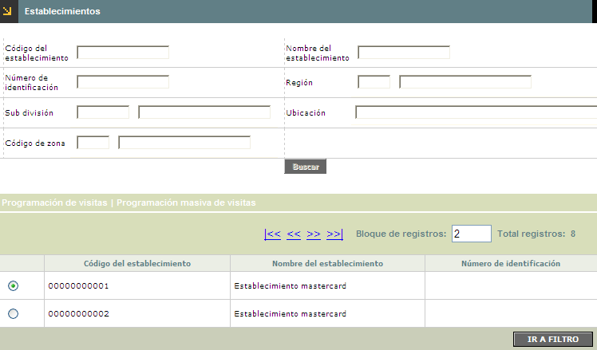
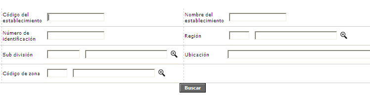

|
Programación de visitas a establecimientos |
Una vez que se ha efectuado el proceso de programación de visitas, por medio de esta opción, la entidad financiera puede definir las actividades que se deben llevar a cabo en cada una de las visitas programadas a los establecimientos. El formulario cuenta con un filtro de búsqueda y los vinculos Programación de visitas / Programación masiva de visitas.

Filtro: Se pueden realizar consultas a través de las siguientes opciones:

|
Código del establecimiento |
Campo alfanumérico de 11 dígitos, el cual corresponde al código único que identifica a cada comercio dentro de las franquicias o al código asignado a los establecimientos de marca privada. |
|
Nombre del establecimiento |
En este campo alfanumérico de 30 dígitos, se registra el nombre comercial del establecimiento asociado al código único. |
|
Número de identificación |
Este campo alfanumérico de 12 posiciones, permite ingresar la identificación del asociado que se desea filtrar. |
|
Región |
Campo alfanumérico de tres dígitos, que contiene el código asignado a cada Región. Se puede diligenciar de forma manual o desplazando la lista de valores. |
|
Sub división |
Campo alfanumérico, que contiene el código asignado a cada Sub división. Se diligencia desplazando la lista de valores. |
|
Ubicación |
Campo obligatorio, diligenciable según la información contenida en el campo Sub división , en esta se diligencian los datos contenidos en la tabla Información geopolitica. |
|
Código de zona |
Campo numérico de 2 dígitos, en el cual se registra el código asignado por la entidad a cada una de las zonas que conforman las subdivisiones. |